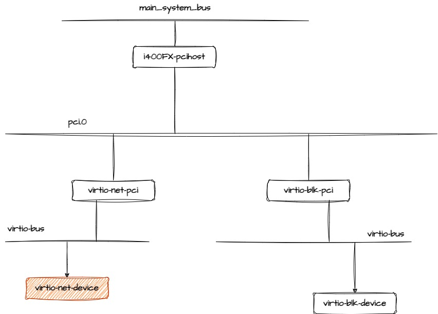

Qemu: Virtio_net Device¶
Realize virtio_net_device¶
virtio_net_pci_realize会通过object_property_set_bool调用virtio_net_device的realize函数
static void virtio_net_pci_realize(VirtIOPCIProxy *vpci_dev, Error **errp)
{
DeviceState *qdev = DEVICE(vpci_dev);
VirtIONetPCI *dev = VIRTIO_NET_PCI(vpci_dev);
DeviceState *vdev = DEVICE(&dev->vdev);
virtio_net_set_netclient_name(&dev->vdev, qdev->id,
object_get_typename(OBJECT(qdev)));
qdev_set_parent_bus(vdev, BUS(&vpci_dev->bus));
object_property_set_bool(OBJECT(vdev), true, "realized", errp);
}
(gdb) s
object_property_set_bool (obj=0x55555729b2b0, value=true, name=0x555555cac945 "realized", errp=0x7fffffffe3d0) at /usr/src/debug/qemu/4.1.0-r0/qemu-4.1.0/qom/object.c:1336
1336 /usr/src/debug/qemu/4.1.0-r0/qemu-4.1.0/qom/object.c: No such file or directory.
(gdb) p *obj
$91 = {class = 0x5555563d1790, free = 0x0, properties = 0x555557267c60, ref = 2, parent = 0x555557293140}
(gdb) p *obj->class
$92 = {type = 0x5555563105a0, interfaces = 0x0, object_cast_cache = {0x0, 0x0, 0x555555c70165 "device", 0x555555c6d290 "virtio-net-device"}, class_cast_cache = {0x0, 0x0,
0x555555c70165 "device", 0x555555c66dd3 "virtio-device"}, unparent = 0x55555599ae70 <device_unparent>, properties =
(gdb) p *(struct TypeImpl*)0x5555563105a0
$93 = {name = 0x555556310720 "virtio-net-device", class_size = 320, instance_size = 8960, class_init = 0x55555587ee50 <virtio_net_class_init>, class_base_init = 0x0,
class_data = 0x0, instance_init = 0x55555587faf0 <virtio_net_instance_init>, instance_post_init = 0x0, instance_finalize = 0x0, abstract = false,
parent = 0x555556310740 "virtio-device", parent_type = 0x555556311a30, class = 0x5555563d1790, num_interfaces = 0, interfaces = {{typename = 0x0} <repeats 32 times>}}
(gdb)
virtio_net_pci_realize 函数首先通过VIRTIO_NET_PCI将VirtIOPCIProxy转换为VirtIONetPCI
相当于从一个父类转换为子类。
接着通过DEVICE获取设备部分DeviceState
设置virtio net pci设备的总线为VirtIOPCIProxy设备中的bus成员，也就是
将此设备挂载到virtio的总线上
调用object_property_set_bool将设备realized，这会导致virtio_device_realize的执行
Thread 1 "qemu-system-x86" hit Breakpoint 1, virtio_net_device_realize (dev=0x55555729b2b0, errp=0x7fffffffe1f0)
at /usr/src/debug/qemu/4.1.0-r0/qemu-4.1.0/hw/net/virtio-net.c:2658
2658 in /usr/src/debug/qemu/4.1.0-r0/qemu-4.1.0/hw/net/virtio-net.c
bt
0 virtio_net_device_realize (dev=0x55555729b2b0, errp=0x7fffffffe1f0) at /usr/src/debug/qemu/4.1.0-r0/qemu-4.1.0/hw/net/virtio-net.c:2658
1 0x0000555555896628 in virtio_device_realize (dev=0x55555729b2b0, errp=0x7fffffffe250) at /usr/src/debug/qemu/4.1.0-r0/qemu-4.1.0/hw/virtio/virtio.c:2613
2 0x000055555599c655 in device_set_realized (obj=<optimized out>, value=<optimized out>, errp=0x7fffffffe3d0)
at /usr/src/debug/qemu/4.1.0-r0/qemu-4.1.0/hw/core/qdev.c:834
3 0x0000555555ad4dd7 in property_set_bool (obj=0x55555729b2b0, v=<optimized out>, name=<optimized out>, opaque=0x55555729e980, errp=0x7fffffffe3d0)
at /usr/src/debug/qemu/4.1.0-r0/qemu-4.1.0/qom/object.c:2079
4 0x0000555555ad9270 in object_property_set_qobject (obj=0x55555729b2b0, value=<optimized out>, name=0x555555cac945 "realized", errp=0x7fffffffe3d0)
at /usr/src/debug/qemu/4.1.0-r0/qemu-4.1.0/qom/qom-qobject.c:26
5 0x0000555555ad6b56 in object_property_set_bool (obj=0x55555729b2b0, value=<optimized out>, name=0x555555cac945 "realized", errp=0x7fffffffe3d0)
at /usr/src/debug/qemu/4.1.0-r0/qemu-4.1.0/qom/object.c:1337
virtio_device_realize¶
static void virtio_device_realize(DeviceState *dev, Error **errp)
{
VirtIODevice *vdev = VIRTIO_DEVICE(dev);
VirtioDeviceClass *vdc = VIRTIO_DEVICE_GET_CLASS(dev);
Error *err = NULL;
/* Devices should either use vmsd or the load/save methods */
assert(!vdc->vmsd || !vdc->load);
if (vdc->realize != NULL) {
vdc->realize(dev, &err);
if (err != NULL) {
error_propagate(errp, err);
return;
}
}
virtio_bus_device_plugged(vdev, &err);
if (err != NULL) {
error_propagate(errp, err);
vdc->unrealize(dev, NULL);
return;
}
vdev->listener.commit = virtio_memory_listener_commit;
memory_listener_register(&vdev->listener, vdev->dma_as);
}
vdc->realize 在这里是 virtio_net_device_realize (hw/net/virtio-net.c)
virtio_bus_device_plugged 主要职责就是将virtio设备挂载到virtio总线上
virtio_net_device_realize¶
static void virtio_net_device_realize(DeviceState *dev, Error **errp)
{
VirtIODevice *vdev = VIRTIO_DEVICE(dev);
VirtIONet *n = VIRTIO_NET(dev);
NetClientState *nc;
int i;
if (n->net_conf.mtu) {
n->host_features |= (1ULL << VIRTIO_NET_F_MTU);
}
if (n->net_conf.duplex_str) {
if (strncmp(n->net_conf.duplex_str, "half", 5) == 0) {
n->net_conf.duplex = DUPLEX_HALF;
} else if (strncmp(n->net_conf.duplex_str, "full", 5) == 0) {
n->net_conf.duplex = DUPLEX_FULL;
} else {
error_setg(errp, "'duplex' must be 'half' or 'full'");
}
n->host_features |= (1ULL << VIRTIO_NET_F_SPEED_DUPLEX);
} else {
n->net_conf.duplex = DUPLEX_UNKNOWN;
}
if (n->net_conf.speed < SPEED_UNKNOWN) {
error_setg(errp, "'speed' must be between 0 and INT_MAX");
} else if (n->net_conf.speed >= 0) {
n->host_features |= (1ULL << VIRTIO_NET_F_SPEED_DUPLEX);
}
virtio_net_set_config_size(n, n->host_features);
virtio_init(vdev, "virtio-net", VIRTIO_ID_NET, n->config_size);
/*
* We set a lower limit on RX queue size to what it always was.
* Guests that want a smaller ring can always resize it without
* help from us (using virtio 1 and up).
*/
if (n->net_conf.rx_queue_size < VIRTIO_NET_RX_QUEUE_MIN_SIZE ||
n->net_conf.rx_queue_size > VIRTQUEUE_MAX_SIZE ||
!is_power_of_2(n->net_conf.rx_queue_size)) {
error_setg(errp, "Invalid rx_queue_size (= %" PRIu16 "), "
"must be a power of 2 between %d and %d.",
n->net_conf.rx_queue_size, VIRTIO_NET_RX_QUEUE_MIN_SIZE,
VIRTQUEUE_MAX_SIZE);
virtio_cleanup(vdev);
return;
}
if (n->net_conf.tx_queue_size < VIRTIO_NET_TX_QUEUE_MIN_SIZE ||
n->net_conf.tx_queue_size > VIRTQUEUE_MAX_SIZE ||
!is_power_of_2(n->net_conf.tx_queue_size)) {
error_setg(errp, "Invalid tx_queue_size (= %" PRIu16 "), "
"must be a power of 2 between %d and %d",
n->net_conf.tx_queue_size, VIRTIO_NET_TX_QUEUE_MIN_SIZE,
VIRTQUEUE_MAX_SIZE);
virtio_cleanup(vdev);
return;
}
n->max_queues = MAX(n->nic_conf.peers.queues, 1);
if (n->max_queues * 2 + 1 > VIRTIO_QUEUE_MAX) {
error_setg(errp, "Invalid number of queues (= %" PRIu32 "), "
"must be a positive integer less than %d.",
n->max_queues, (VIRTIO_QUEUE_MAX - 1) / 2);
virtio_cleanup(vdev);
return;
}
n->vqs = g_malloc0(sizeof(VirtIONetQueue) * n->max_queues);
n->curr_queues = 1;
n->tx_timeout = n->net_conf.txtimer;
if (n->net_conf.tx && strcmp(n->net_conf.tx, "timer")
&& strcmp(n->net_conf.tx, "bh")) {
warn_report("virtio-net: "
"Unknown option tx=%s, valid options: \"timer\" \"bh\"",
n->net_conf.tx);
error_printf("Defaulting to \"bh\"");
}
n->net_conf.tx_queue_size = MIN(virtio_net_max_tx_queue_size(n),
n->net_conf.tx_queue_size);
for (i = 0; i < n->max_queues; i++) {
virtio_net_add_queue(n, i);
}
n->ctrl_vq = virtio_add_queue(vdev, 64, virtio_net_handle_ctrl);
qemu_macaddr_default_if_unset(&n->nic_conf.macaddr);
memcpy(&n->mac[0], &n->nic_conf.macaddr, sizeof(n->mac));
n->status = VIRTIO_NET_S_LINK_UP;
qemu_announce_timer_reset(&n->announce_timer, migrate_announce_params(),
QEMU_CLOCK_VIRTUAL,
virtio_net_announce_timer, n);
n->announce_timer.round = 0;
2752 if (n->netclient_type) {
/*
* Happen when virtio_net_set_netclient_name has been called.
*/
n->nic = qemu_new_nic(&net_virtio_info, &n->nic_conf,
n->netclient_type, n->netclient_name, n);
} else {
n->nic = qemu_new_nic(&net_virtio_info, &n->nic_conf,
object_get_typename(OBJECT(dev)), dev->id, n);
}
peer_test_vnet_hdr(n);
if (peer_has_vnet_hdr(n)) {
for (i = 0; i < n->max_queues; i++) {
qemu_using_vnet_hdr(qemu_get_subqueue(n->nic, i)->peer, true);
}
n->host_hdr_len = sizeof(struct virtio_net_hdr);
} else {
n->host_hdr_len = 0;
}
qemu_format_nic_info_str(qemu_get_queue(n->nic), n->nic_conf.macaddr.a);
n->vqs[0].tx_waiting = 0;
n->tx_burst = n->net_conf.txburst;
virtio_net_set_mrg_rx_bufs(n, 0, 0);
n->promisc = 1; /* for compatibility */
n->mac_table.macs = g_malloc0(MAC_TABLE_ENTRIES * ETH_ALEN);
n->vlans = g_malloc0(MAX_VLAN >> 3);
nc = qemu_get_queue(n->nic);
nc->rxfilter_notify_enabled = 1;
QTAILQ_INIT(&n->rsc_chains);
n->qdev = dev;
}
首先调用 virtio_init 初始化virito设备的公共部分，
virtio_init 的工作就是初始化所有virtio设备的基类 TYPE_VIRTIO_DEVICE的实列 VirtIODevice 结构体
for (i = 0; i < n->max_queues; i++) {
virtio_net_add_queue(n, i);
}
n->ctrl_vq = virtio_add_queue(vdev, 64, virtio_net_handle_ctrl);
static void virtio_net_add_queue(VirtIONet *n, int index)
{
VirtIODevice *vdev = VIRTIO_DEVICE(n);
n->vqs[index].rx_vq = virtio_add_queue(vdev, n->net_conf.rx_queue_size,
virtio_net_handle_rx);
if (n->net_conf.tx && !strcmp(n->net_conf.tx, "timer")) {
n->vqs[index].tx_vq =
virtio_add_queue(vdev, n->net_conf.tx_queue_size,
virtio_net_handle_tx_timer);
n->vqs[index].tx_timer = timer_new_ns(QEMU_CLOCK_VIRTUAL,
virtio_net_tx_timer,
&n->vqs[index]);
} else {
n->vqs[index].tx_vq =
virtio_add_queue(vdev, n->net_conf.tx_queue_size,
virtio_net_handle_tx_bh);
n->vqs[index].tx_bh = qemu_bh_new(virtio_net_tx_bh, &n->vqs[index]);
}
n->vqs[index].tx_waiting = 0;
n->vqs[index].n = n;
}
调用 virtio_add_queue 创建queue
收报文的队列rx_vq, 处理函数为virtio_net_handle_rx
发报文的队列tx_vq, 处理函数为virtio_net_handle_tx_bh
负责处理控制信息的队列 ctrl_vq, 处理函数为virtio_net_handle_ctrl
virtio_init¶
void virtio_init(VirtIODevice *vdev, const char *name,
uint16_t device_id, size_t config_size)
{
BusState *qbus = qdev_get_parent_bus(DEVICE(vdev));
VirtioBusClass *k = VIRTIO_BUS_GET_CLASS(qbus);
int i;
int nvectors = k->query_nvectors ? k->query_nvectors(qbus->parent) : 0;
if (nvectors) {
vdev->vector_queues =
g_malloc0(sizeof(*vdev->vector_queues) * nvectors);
}
vdev->start_on_kick = false;
vdev->started = false;
vdev->device_id = device_id;
vdev->status = 0;
atomic_set(&vdev->isr, 0);
vdev->queue_sel = 0;
vdev->config_vector = VIRTIO_NO_VECTOR;
vdev->vq = g_malloc0(sizeof(VirtQueue) * VIRTIO_QUEUE_MAX);
vdev->vm_running = runstate_is_running();
vdev->broken = false;
for (i = 0; i < VIRTIO_QUEUE_MAX; i++) {
vdev->vq[i].vector = VIRTIO_NO_VECTOR;
vdev->vq[i].vdev = vdev;
vdev->vq[i].queue_index = i;
}
vdev->name = name;
vdev->config_len = config_size;
if (vdev->config_len) {
vdev->config = g_malloc0(config_size);
} else {
vdev->config = NULL;
}
vdev->vmstate = qdev_add_vm_change_state_handler(DEVICE(vdev),
virtio_vmstate_change, vdev);
vdev->device_endian = virtio_default_endian();
vdev->use_guest_notifier_mask = true;
}
virtio_add_queue¶
从VirtIODevice的vq数组中找到一个还没有被使用的queue,每个数组成员是一个VirtQueue的结构体，
找到queue之后，对其结构体成员进行初始化
VirtQueue *virtio_add_queue(VirtIODevice *vdev, int queue_size,
VirtIOHandleOutput handle_output)
{
int i;
for (i = 0; i < VIRTIO_QUEUE_MAX; i++) {
if (vdev->vq[i].vring.num == 0)
break;
}
if (i == VIRTIO_QUEUE_MAX || queue_size > VIRTQUEUE_MAX_SIZE)
abort();
vdev->vq[i].vring.num = queue_size;
vdev->vq[i].vring.num_default = queue_size;
vdev->vq[i].vring.align = VIRTIO_PCI_VRING_ALIGN;
vdev->vq[i].handle_output = handle_output;
vdev->vq[i].handle_aio_output = NULL;
return &vdev->vq[i];
}